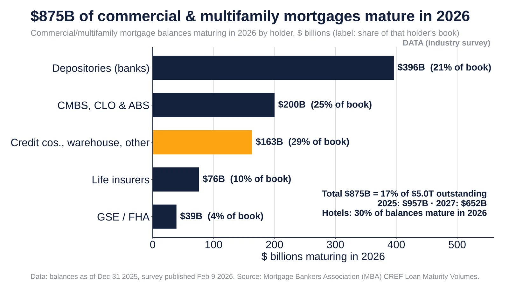
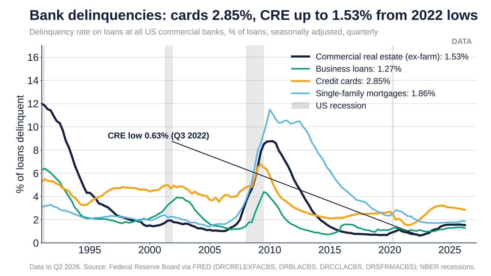

Q4. Corporate & CRE
Weekly Focus graphs, started Oct 25, 2026: new charts are added each week from primary or clearly named secondary data. Each caption names its sources and its caveats.

$875B (17% of $5.0T) of CRE mortgages mature in 2026; banks hold $396B. MBA survey, balances at Dec 31 2025.
- Feb 9 2026, MBA: $875B matures in 2026, after $957B in 2025; $652B is due in 2027.
- By holder: depositories $396B (21% of their book), CMBS/CLO/ABS $200B (25%), credit companies/warehouse $163B (29%), life insurers $76B (10%) and GSE/FHA $39B (4%).
- Share of balances maturing by property type: hotel 30%, industrial 23%, office 17%.

Bank delinquency, Q2 2026: cards 2.85%, CRE 1.53% (0.63% low), business 1.27%. Source: Federal Reserve via FRED.
- Q2 2026: credit cards 2.85%, single-family mortgages 1.86%, CRE ex-farm 1.53%, business loans 1.27%.
- The CRE delinquency rate has more than doubled from its Q3 2022 low of 0.63%.
- For scale, CRE peaked near 8.7% in 2010, so the current level is elevated but far from a GFC-style episode.
Sources: FRED series DRCRELEXFACBS FRED series DRBLACBS FRED series DRCCLACBS FRED series DRSFRMACBS Federal Reserve, charge-off and delinquency rates